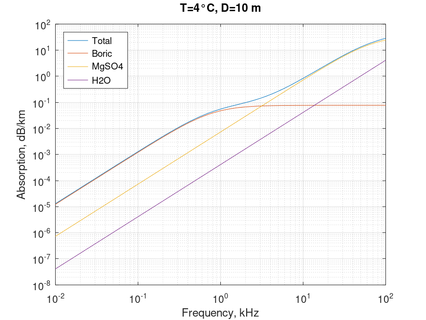

Sound absorption in sea. Fisher & Simmons equation
Mathematical definition
$$\boxed{\alpha \left( {T,D,f} \right) = \frac{{{A_1}{P_1}{f_1}{f^2}}}{{{f_1}^2 + {f^2}}} + \frac{{{A_2}{P_2}{f_2}{f^2}}}{{{f_2}^2 + {f^2}}} + {A_3}{P_3}{f^2}}$$
| Notation | Description | Units | Limits |
|---|---|---|---|
| $\alpha$ | absorption | $\text{dB/km}$ | |
| $T$ | temperature | $^{\circ}\text{C}$ | |
| $D$ | depth | $\text{m}$ | |
| $f$ | frequency | $\text{kHz}$ |
$${A_1} = \left( {1.03 \times {{10}^{ - 8}}} \right) + \left( {2.36 \times {{10}^{ - 10}}} \right)T - \left( {5.22 \times {{10}^{ - 12}}} \right){T^2}$$
$${P_1} = 1$$
$${f_1} = \left( {1.32 \times {{10}^3}} \right){T_K}\exp \left( { - 1700/{T_K}} \right)$$
$${A_2} = \left( {5.62 \times {{10}^{ - 8}}} \right) + \left( {7.52 \times {{10}^{ - 10}}T} \right)$$
$${P_2} = 1 - \left( {10.3 \times {{10}^{ - 4}}} \right)P + \left( {3.7 \times {{10}^{ - 7}}} \right){P^2}$$
$${f_2} = \left( {1.55 \times {{10}^7}} \right){T_K}\exp \left( { - 3052/{T_K}} \right)$$
$${A_3} = \left( {55.9 - 2.37T + \left( {4.77 \times {{10}^{ - 2}}} \right){T^2} - \left( {3.48 \times {{10}^{ - 4}}} \right){T^3}} \right) \times {10^{ - 15}}$$
$${P_3} = 1 - \left( {3.84 \times {{10}^{ - 4}}} \right)P + \left( {7.57 \times {{10}^{ - 8}}} \right){P^2}$$
| Notation | Description | Units |
|---|---|---|
| $T_{K}$ | $=T + 273.1$, temperature in Kelvin | $\text{K}$ |
| $f_{1}$ | boric acid relaxation frequency | $\text{kHz}$ |
| $f_{2}$ | magnesium sulphate relaxation frequency | $\text{kHz}$ |
| $\frac{{{A_1}{P_1}{f_1}{f^2}}}{{{f_1}^2 + {f^2}}}$ | boric acid contribution | $\text{dB/km}$ |
| $\frac{{{A_2}{P_2}{f_2}{f^2}}}{{{f_2}^2 + {f^2}}}$ | magnesium sulphate contribution | $\text{dB/km}$ |
| ${A_3}{P_3}{f^2}$ | pure water contribution | $\text{dB/km}$ |
Octave/Matlab implementation
function [alpha, Boric, MgSO4, H2O] = sound_absorption_sea_fisher(T,D,f)
% Inputs
% T: temperature \ degree Celsius
% D: depth \ m
% f: frequency \ kHz \ 10 < f < 400
% Outputs
% alpha: absorption of sound in seawater \ dB/km
T_kel = 273.1 + T;
P = D ./ 10.0;
f = f * 1e3;
% Boric
A1 = (1.03e-8) + (2.36e-10)*T - (5.22e-12)*(T.^2);
P1 = 1;
f1 = (1.32e3)*T_kel.*exp(-1700./T_kel);
Boric = (A1.*P1.*f1.*(f.^2))./((f.^2)+(f1.^2));
Boric = Boric * 8686;
% MgSO4
A2 = (5.62e-8) + (7.52e-10)*T;
P2 = 1 - (10.3e-4)*P + (3.7e-7)*(P.^2);
f2 = (1.55e7)*T_kel.*exp(-3052./T_kel);
MgSO4 = (A2.*P2.*f2.*(f.^2))./((f.^2)+(f2.^2));
MgSO4 = MgSO4 * 8686;
% H2O
A3 = (55.9 - 2.37*T + (4.77e-2)*(T.^2) - (3.48e-4)*(T.^3))*(1e-15);
P3 = 1 - (3.84e-4)*P + (7.57e-8)*(P.^2);
H2O = A3.*P3.*(f.^2);
H2O = H2O * 8686;
% Total
alpha = (Boric + MgSO4 + H2O);
end
Computational examples

References
- Fisher, FH; Simmons, VP, "Sound absorption in sea water", 1977
- Lyman, John; Fleming, Richard H, "Composition of sea water", 1940